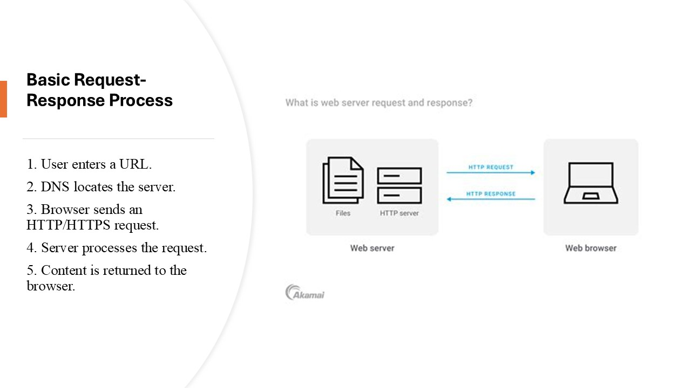

When a user enters a URL into a browser, the browser sends an HTTP or HTTPS request to a web server. The server processes the request, retrieves the requested resource, and returns a response to the browser. Modern web servers often use load balancing, caching, and cloud deployment to improve performance and reliability.